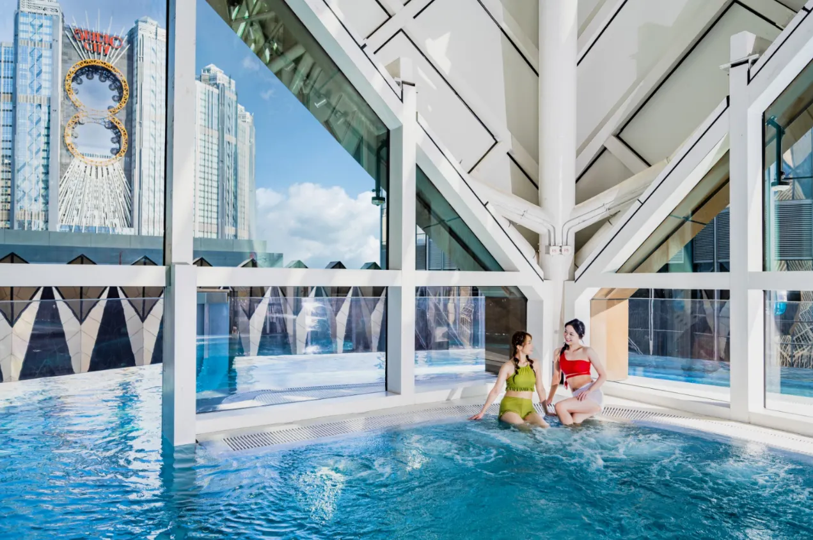

新濠影滙水上樂園

新濠影滙水上樂園是澳門最大室內外水上樂園，全年恒溫30度，分室內太空主題及戶外園區。室內擁有16個遊樂設施，包括光速飛車、衝浪戰士、天崖海角、星空激流等。戶外有沖天水龍卷、黃金大水桶、綠野遊蹤漂流等62個嬉水點。適合所有年齡層，結合刺激滑道、造浪池、攀岩及親子區，提供全天候水上娛樂。
正面評價： 新濠影滙水上樂園全年恒溫30度，玩水無極限！室內園區以太空為主題，擁有16個令人興奮的遊樂設施，包括極速水上過山車、室內沖浪模擬器、7個滑水道、2個造浪池、246米星空激流之旅及3.7米深潛水池，挑戰平臺跳水及攀巖歷險的「天崖海角」。戶外園區適合一家大小，刺激滿FUN，包含20米高「沖天水龍卷」5條滑水道、多條滑梯、瀑布連嬉水點共62個，還有「黃金大水桶」定時傾倒及孩童專屬嬉水樂園。綠野遊蹤漂流之旅以熱帶森林為主題，讓人放鬆又開心。在漫月廚房享受美食，補充能量後繼續暢遊，是一次難忘的水上冒險！
